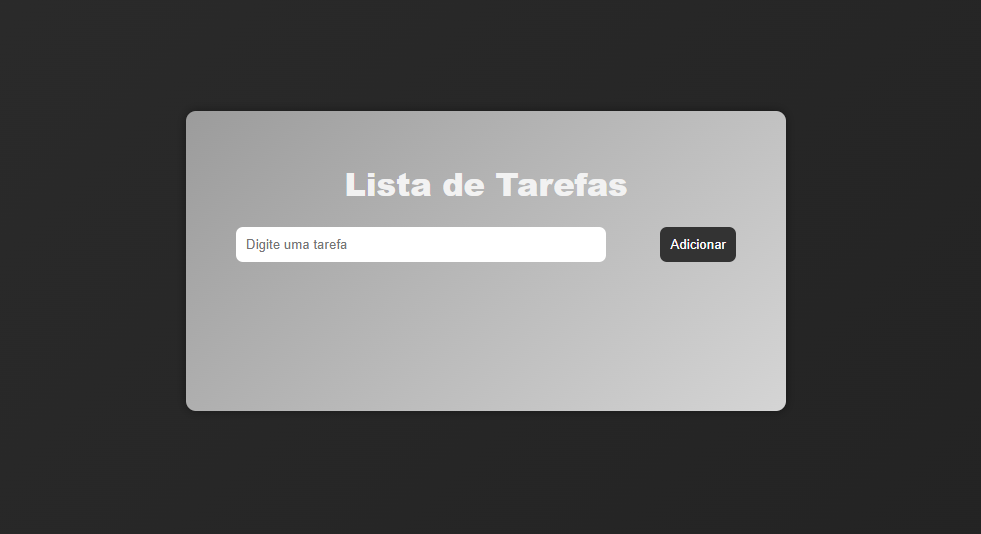

Olá, me chamo
Pedro Henrique Gomes
Bem-vindo ao meu portfólio pessoal. Desenvolvedor em busca de oportunidades.
Sobre Mim
Sou estudante do curso Técnico em Informática, onde venho desenvolvendo conhecimentos em programação, hardware, redes, sistemas operacionais e suporte técnico.
Tenho interesse pela área de Tecnologia da Informação e gosto de aprender por meio de projetos práticos e desafios que contribuam para meu crescimento profissional. Ao longo do curso, venho adquirindo experiência com desenvolvimento de software, manutenção de computadores, banco de dados e fundamentos de infraestrutura.
Busco minha primeira oportunidade de estágio para ganhar experiência, aprender com profissionais da área e desenvolver minhas habilidades em diferentes segmentos da tecnologia.
Me considero uma pessoa dedicada e persistente. Quando começo algo, gosto de ir até o fim e buscar melhorar aos poucos. Também valorizo colaboração e acredito que aprender com outras pessoas é uma das melhores formas de evoluir.
Meus Objetivos
Primeiro Estágio
Buscar minha primeira oportunidade de estágio para aplicar na prática os conhecimentos do curso técnico
Evolução Técnica
Desenvolver e aprimorar minhas competências na área de Tecnologia da Informação, adquirindo experiência prática em diferentes áreas, como desenvolvimento de software, suporte técnico, infraestrutura e hardware.
Colaboração
Trabalhar em equipe, aprender com desenvolvedores mais experientes e contribuir na resolução de problemas.
Escolaridade
Técnico em Informática
Colégio COTEMIG - Unidade Barroca
2ª Série do Ensino Médio TécnicoPrevisão de conclusão: 2027
Conhecimento
Html
Css
JavaScript (basico)
Logica e programação
C# (iniciante)
Hardware
Software
Inglês intermediário
Experiencia basica com N8N (automação)
Familiarizado com Google Workspace
MySQL (basico)
Python (basico)
Projetos
To-do list

Aplicação web desenvolvida com HTML, CSS e JavaScript, permitindo:
- Adicionar, editar e remover tarefas
- Salvamento automático utilizando LocalStorage
- Utilização de animações com CSS Keyframes
Tela de Login com Validação e Armazenamento de Dados
Aplicação web com autenticação de usuários, cadastro com confirmação de senha e integração com banco de dados MySQL. Versionado com Git e publicado no GitHub.
- Autenticação de usuários
- Cadastro com confirmação de senha
- Integração com banco de dados MySQL
- Utilização de Python, Flask
API de clima
Desenvolvimento de um Dashboard de Clima Full Stack que consome dados reais da API OpenWeather. A aplicação permite buscar o clima de qualquer cidade, exibindo temperatura, umidade e vento de forma dinâmica e responsiva.
- FastAPI (python)
- JavaScript (fetch)
- HTML
- CSS